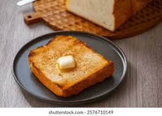

Toast!

Perfect for breakfast or anytime, there's nothing quite like a delicious slice of toast.
Ingredients
- 1 loaf of fresh sourdough bread
- Softened butter
- Strawberry or Blackbery Jam
Directions
- Toast for approximately 2 minutes. Watch carefully that it doesn't burn.
- Quickly spread the butter across the entire surface. Don't be skimpy!
- Spread the jam over the butter. It doesn't take as much as you'd think.
- Cut diagonally into 2 triangles. Eat hot for best results.
- Optional: try puzzle toast if preparing for someone else!
Return to Main Page